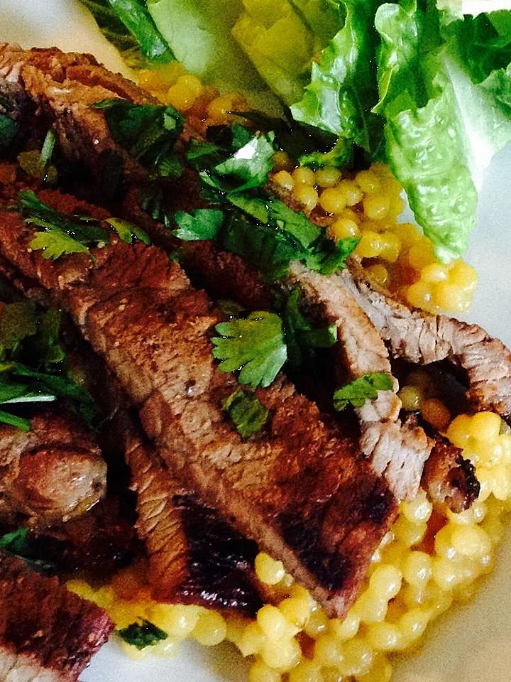

Bo Nuong Xa

Description
Marinated lemon grass beef skewers that can be broiled or grilled. This is a traditional Vietnamese dish, best if dipped in Nuaoc Cham sauce.
Ingredients
- 2 teaspoons white sugar
- 2 tablespoons soy sauce
- 1 teaspoon ground black pepper
- 2 cloves garlic, minced
- 2 stalks lemon grass, minced
- 2 teaspoons sesame seeds
- 1 ½ pounds sirloin tip, thinly sliced
- skewers
- 12 leaves romaine lettuce
- fresh cilantro for garnish
- fresh basil for garnish
- fresh mint for garnish
- thinly sliced green onion for garnish
Steps
- In a medium bowl, mix the sugar, soy sauce, pepper, garlic, lemon grass, and sesame seeds. Place the meat in the dish, and stir to coat. Cover, and refrigerate for 4 hours.
- Preheat grill for high heat. Discard marinade, and thread meat onto skewers accordion style.
- Brush grill grate with oil, and discard marinade. Arrange skewers on the grill. Cook 5 minutes per side. Serve hot from skewers, or remove from skewers and serve on lettuce leaves. Garnish with cilantro, mint, basil, and sliced green onions.